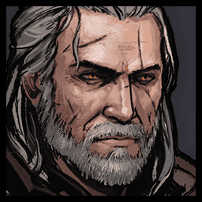
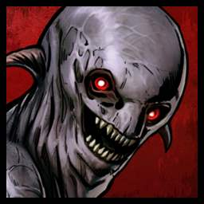

Geralt

Nekker
Images, character names and font are from "Gwent: The Witcher Card Game" video game developed by CD Projekt RED based on
Andrzej Sapkowski's novels.
This is an imagination of
"Knight Travails" project from
Odin Project.
- Place Geralt to board.
- Place Nekker to board.
- Click "Fight" button.